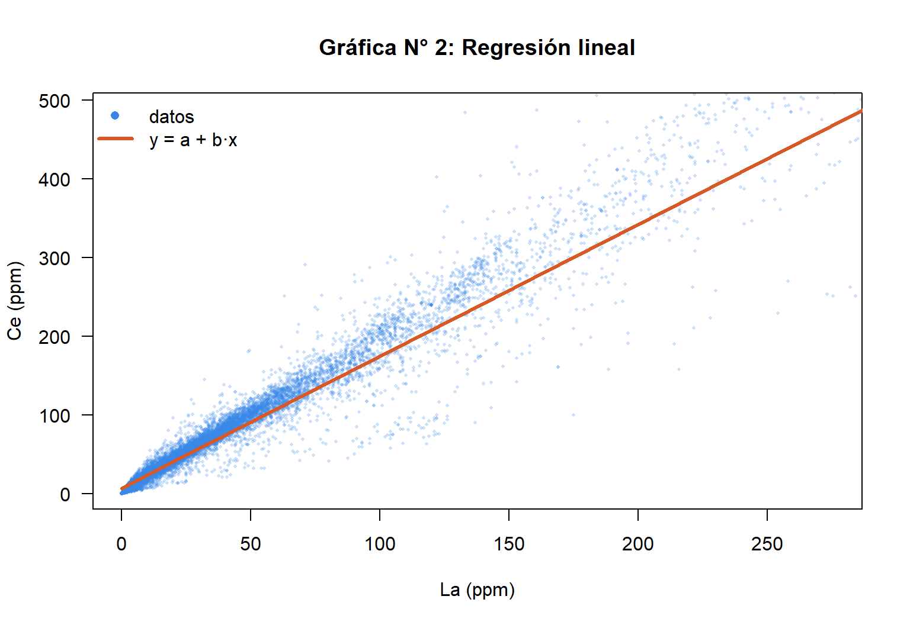
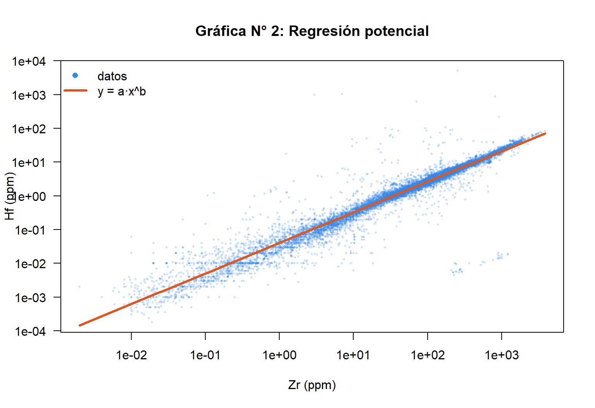
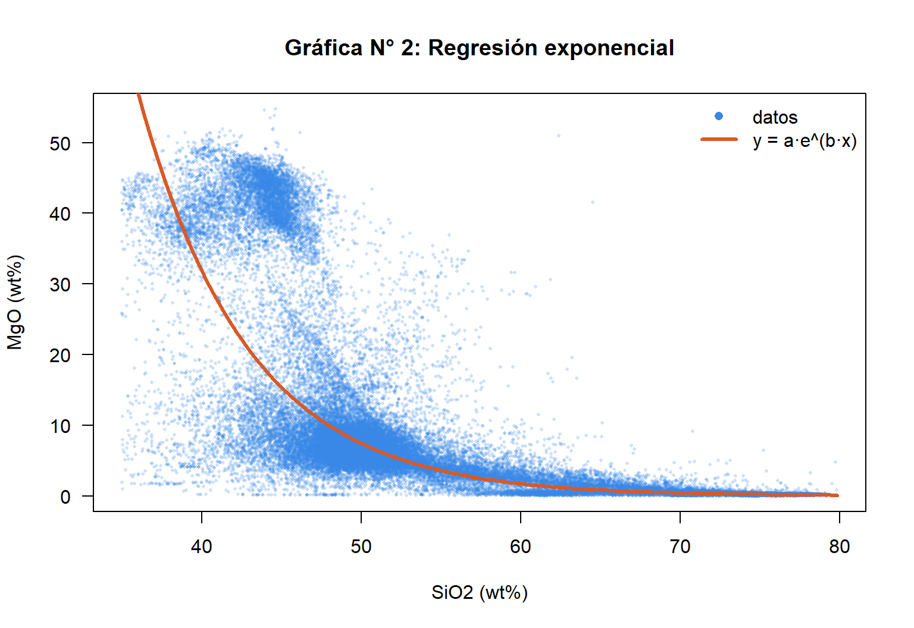
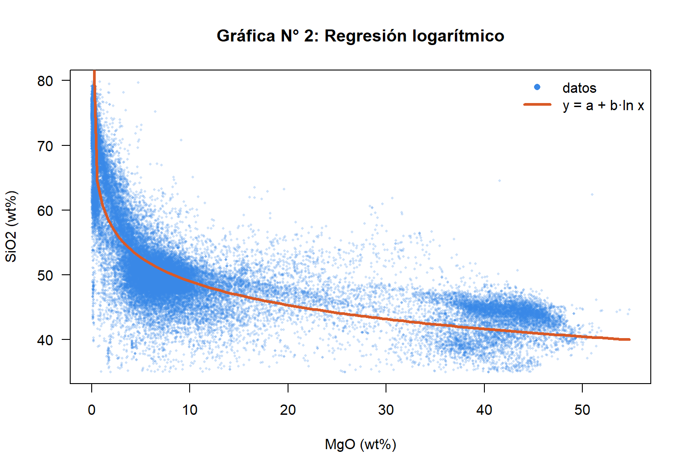
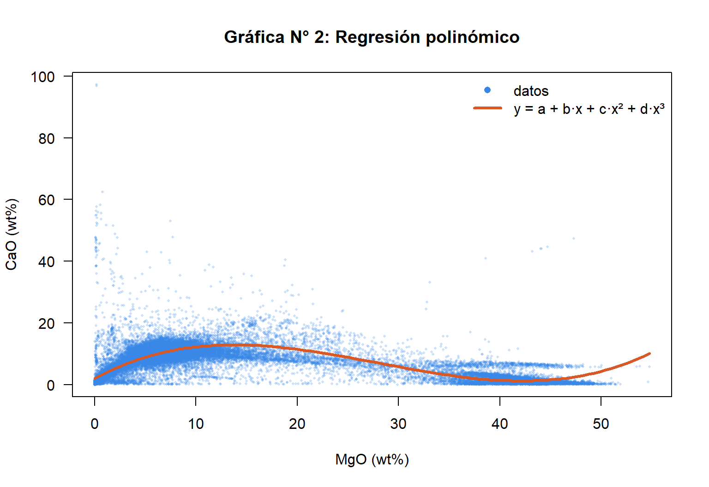
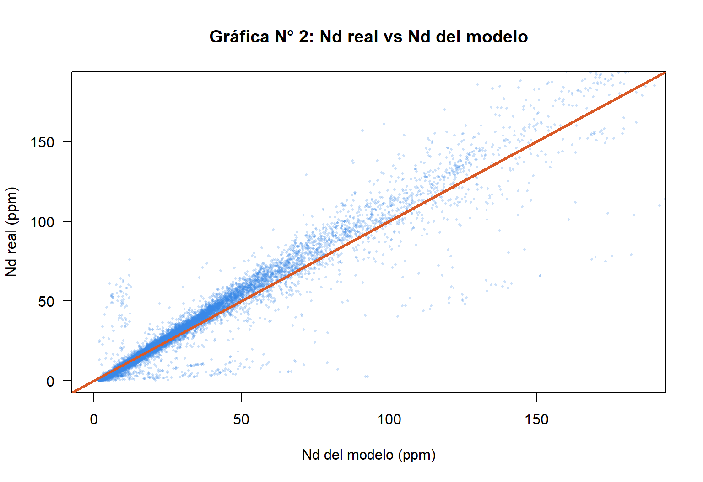
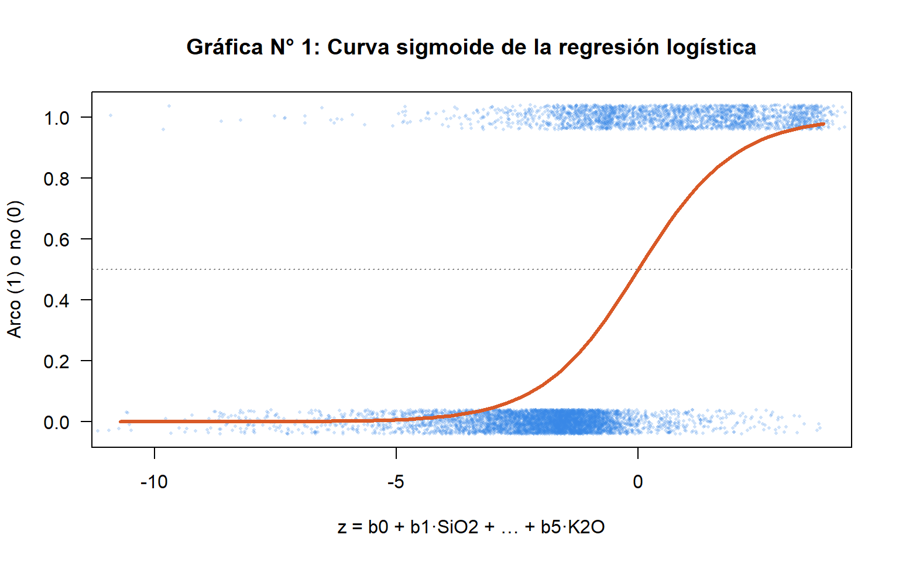
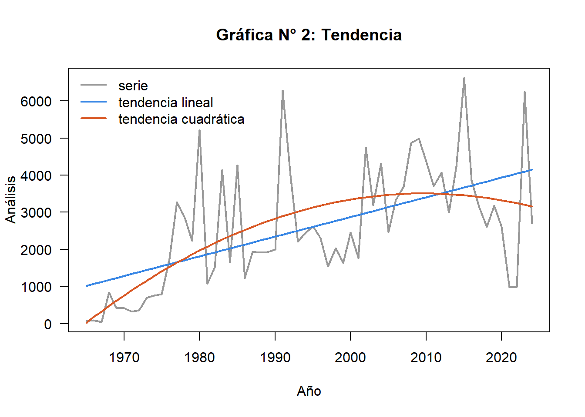
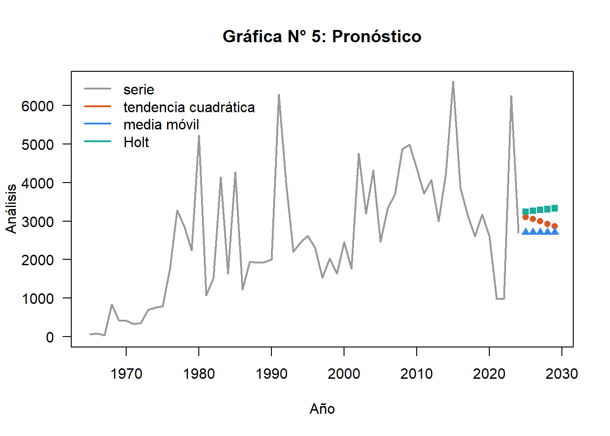
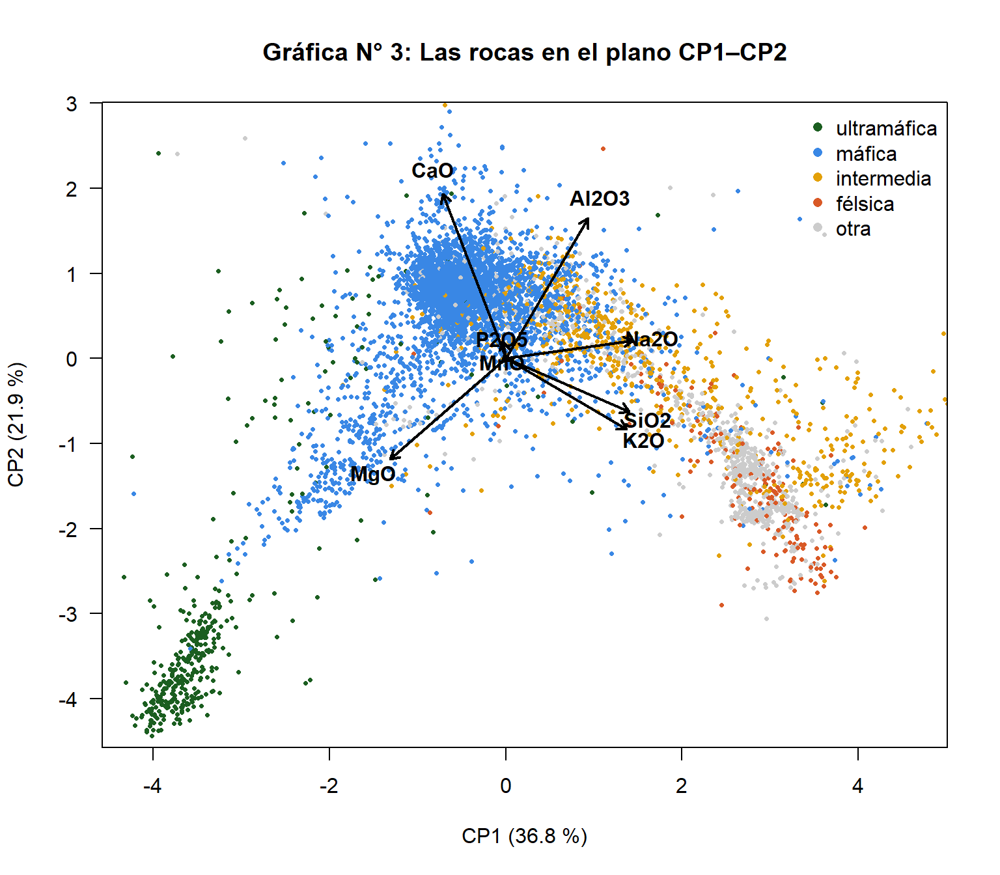

Método
Los modelos no lineales se ajustan como en la plantilla del curso: se transforman las variables con logaritmos hasta que la relación es una recta y se ajusta esa recta con mínimos cuadrados.
Cómo se eligió cada par (prueba y error)
- Se probaron los cinco modelos en 28 pares de óxidos y elementos, en toda la base y en los basaltos. Cada documento muestra la tabla con la correlación de los cinco modelos para su par: el elegido es el que mejor ajusta.
- Solo filas con los dos datos. Ningún valor faltante se inventa; cada par usa entre 20.000 y 54.000 análisis.
- Los logaritmos cambian todo. Circonio y hafnio tienen r = 0,15 en escala normal, porque unos pocos valores extremos dominan, y r = 0,97 en logaritmos.
- Puntos influyentes. En lantano–cerio, unos pocos análisis con una razón Ce/La imposible en rocas naturales (por ejemplo 1.000 ppm de La y 26 de Ce) tiran la recta; se detectan con la distancia de Cook y el ajuste usa el 97 % de los pares, los de Ce/La entre 0,5 y 5. En sílice–magnesio el modelo se restringe a rocas silicatadas (SiO2 entre 35 y 80 %). Nada se borra de la base.
Resumen de los modelos
r² en % es la parte de la variación de y que explica el modelo; el resto se debe a factores que el modelo no considera.
| Modelo | x | y | n | Ecuación | r | r² (%) | Pronóstico | Documento |
|---|
Modelos simples
Una variable explica a otra. Los dos primeros relacionan elementos «gemelos»; los otros tres, la diferenciación magmática: a medida que un magma se enfría pierde magnesio y gana sílice.

Lineal · lantano → cerio
Ce = 6,87 + 1,675·La, con r = 0,970: el cerio depende del lantano en un 94 %. Son tierras raras vecinas que entran y salen juntas de los minerales. El documento incluye la deducción de los estimadores por mínimos cuadrados a mano (b = Sxy/Sxx) y la covarianza.

Potencial · circonio → hafnio
Hf = 0,0402·Zr0,906, r = 0,966 en logaritmos (0,15 en escala normal). El hafnio es el gemelo del circonio y los dos viven en el circón. Para 150 ppm de Zr se esperan 3,8 ppm de Hf.

Exponencial · sílice → magnesio
MgO = 10.739·e−0,1455·SiO₂, r = −0,879: el magnesio cae rápido cuando sube la sílice y después se aplana. Una andesita con 60 % de SiO2 tendría 1,7 % de MgO.

Logarítmico · magnesio → sílice
SiO₂ = 61,24 − 5,31·ln(MgO), r = −0,879. La misma diferenciación vista desde el otro lado, como en la plantilla del curso. Restricción: más allá de MgO = e−a/b el modelo daría sílice negativa.

Polinómico · magnesio → calcio
El CaO sube hasta un máximo cerca de 14 % de MgO (basaltos, con plagioclasa y clinopiroxeno) y baja en las peridotitas (olivino, casi sin calcio). Una recta da r = −0,28; el polinomio de grado 3, r = 0,80. Fuera del rango medido el polinomio se dispara.
Regresión múltiple
Dos o más variables explican a otra. El documento muestra la forma matricial β = (XᵀX)⁻¹Xᵀy, la multicolinealidad (VIF), una variable ficticia (ambiente tectónico) y el análisis de residuos.

Neodimio ← lantano + samario
Nd = 1,71 + 0,368·La + 2,447·Sm, R = 0,847 (R² = 71,7 %). El neodimio está entre el lantano y el samario en la serie de las tierras raras. La y Sm están muy correlacionados entre sí (multicolinealidad), y agregar el ambiente tectónico como variable ficticia casi no mejora el ajuste.
Regresión logística
Para una variable de dos valores (sí/no) la regresión da una probabilidad, con la curva sigmoide. Es la plantilla del curso y el puente hacia la red neuronal: una neurona con activación sigmoide.

¿Roca de arco volcánico?
Con cinco óxidos mayores, el modelo dice si una roca volcánica se formó en un margen convergente. En los datos de prueba acierta el 84,6 %: reconoce el 95 % de las rocas que no son de arco y el 61,6 % de las que sí (son la clase menor). Una andesita típica sale con 73 % de probabilidad de ser de arco; un basalto de dorsal, con 20 %.
Serie de tiempo
Análisis publicados por año, de 1965 a 2024: tendencia por regresión, medias móviles y suavización exponencial, con pronóstico a cinco años.

Componentes y tendencia
La serie crece de largo plazo, con ciclos de varios años (campañas de perforación oceánica) y picos aislados de trabajos que publican miles de análisis juntos. Con datos anuales no hay estacionalidad: se usa un modelo aditivo.

Pronóstico 2025–2029
La tendencia cuadrática, la media móvil de 5 años y la suavización de Holt dan entre 2.700 y 3.400 análisis por año. Los métodos que siguen el nivel reciente son los más prudentes para un dato que depende de campañas y de los autores que cargan sus datos.
Estadística multivariable
Las ocho variables a la vez: matriz de correlación, componentes principales (PCA) y agrupamiento k-means.

Componentes principales
Los dos primeros componentes resumen el 58,7 % de la variación de los ocho óxidos. El CP1 opone el MgO a la sílice y los álcalis: es el eje de la diferenciación magmática y ordena las rocas de ultramáficas (verde) a félsicas (rojo). k-means, sin conocer el tipo de roca, forma grupos que coinciden en buena parte con los tipos reales: la química sola separa las rocas, y esa es la base de la red neuronal de la Unidad 4.